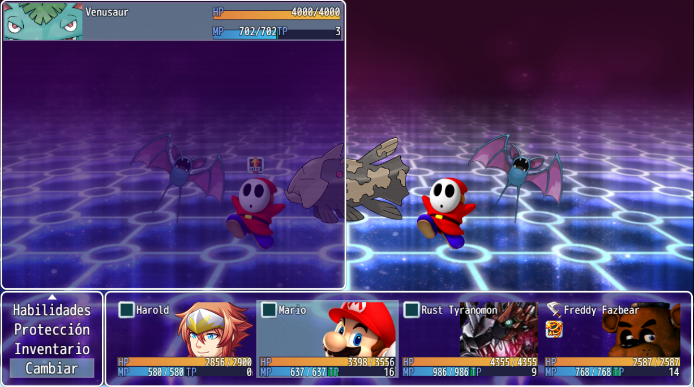
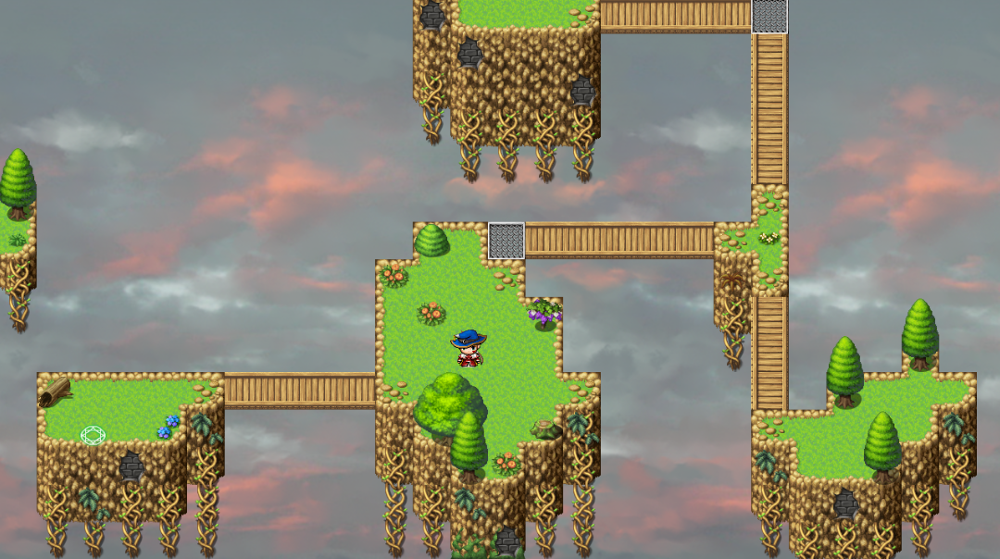

|
Aquí os presento un juego que hice en 2021 en RPG Maker MV. La premisa es simple, usas puntos para comprar personajes para
luchar con otros para ganar más puntos y así poder comprar más personajes y objetos. Lo hice para trastear un poco y sin una dirección
clara más allá de coleccionar personajes y farmear. |
 |
|---|
|
El juego se compone de una sala en la que hay 2 vendedores para objetos y personajes junto unos sofás para sentarse y curar por
completo a tu equipo. Para luchar está el agujero del centro de la habitación para combates normales y el npc con armadura te permite
ir a jefes y peleas más complicadas. La tienda de personajes en realidad simplemente vende objetos, cada uno representa a un personaje y al comprarlos, se activa un script global que te quita el objeto y te añade el personaje al equipo. Creo que presenta algunos errores, pero en un principio el sistema funciona. |
 |
|
Por último, el combate es el de tu típico juego de rpg maker. Lo más relevante es que utilicé un script para poder cambiar un personaje en batalla con otro en reserva (solo puedes tener 4 a la vez). Cada personaje tiene tipos elementales y hasta 4 habilidades. |
|  |
|
Originalmente tenía pensado incluir mazmorras de ciertas temáticas pero acabé perdiendo el interés en el juego. Aquí hay lo que llegué a hacer de una mazmorra de islas flotantes. |
|  |
|
No es la gran cosa, pero si te apetece matar el rato haciendo que Spider-Man luche contra Freddy Fazbear, puedes descargar el juego aquí, tanto para pc como para android. |